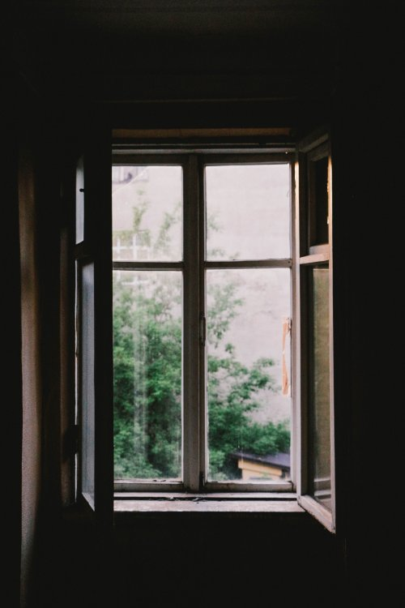
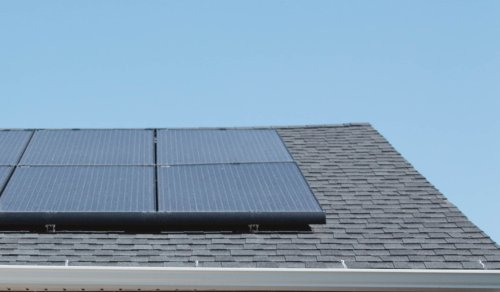

GB SIPS for wall, floor and roof assemblies
Floor Fastener Assembly, (FFA) detail
- The nut is free to turn, and the bolt is fixed.
- For FFA weld bolt to Perimeter and Openings (PO) base using a fixed 3" length bolt, with 2" above level.
- Use 3x ADFA per each wall section if the section is over 8' in length; one on each end and one located in the middle.
- When shipping assembly be sure to cover exposed bolts with protective plastic hood, then remove just before assembling. For the nut use lock nuts with welded washer.
Roof Fastener Assembly, (RFA) detail
- Same as the FFA except that the bolt is free to turn, and the nut is fixed. The bolt slides as shaft through a pipe fixture.
- For RFA weld bolt to Perimeter and Openings (PO) top using a fixed 3" length bolt, with 2" above level.
- Use 2x ADFA per each roof section at each end of the assembly and each section cannot exceed 8' wide.
- When shipping assembly be sure to cover exposed bolts with protective plastic hood, then remove just before assembling.
- The PO is moved in from the eve end of the panel in where the wall assembly meets the roof assembly.
Wall Fastener Assembly, (WFA) detail
- Same as the FFA except that the bolt is free to turn, and the nut is fixed, welded. The bolt slides as shaft through a pipe fixture.
- Use only one ADFA at the top of each wall assembly.
Q: Why Choose a GB NetZero Cottage?
GB NetZero Features
- Garburator recycled compost for plants
- Solarium
- More natural light
- Grey water use for plants
- Exterior run-off water recycled
- Channeled and filtered drain water from sinks, tubs, and showers
- Farm animal waste use
The GB NetZero Advantage
affordable
GB NetZero Cottages are affordable and produce as much clean energy as they consume. They are up to 90% more energy efficient than typical new homes and can use renewable energy systems to produce the remaining energy they need. Every part of a GB Cottage works together to provide consistent temperatures throughout, prevent drafts, and filter indoor air to reduce dust and allergens. The result: exceptional energy performance and the ultimate in comfort. It adds up to a better living experience.
exceptional value
There is exceptional value in a NetZero GB Cottage because it's built to higher standards than other conventional new homes, a GB NetZero Cottage is more durable - with higher performance, warm windows and better insulated walls and roof. You will find with your investment in a GB NetZero Cottage, your utility bills will fall to an all-time low, and stay low all year round.
exceptional comfort
A GB NetZero Cottage delivers exceptional comfort all year round in part because it is built with GB SIPS and the cooling, ventilation systems means more even temperatures throughout the cottage. A built-in filtered fresh air system reduces allergens and asthma triggers, such as dust, pollen and outdoor pollution.
quiet / silent
Tightly built and well insulated, a GB NetZero Cottage is quiet even between floors because GB SIPS are used throughout including interior and exterior walls, floors and roof. Outside noise such as traffic, lawnmowers and barking dogs are virtually silenced.
built-in efficiency
People are more likely to spend the money on a NetZero home if it comes already built-in, rather than the extreme costs to make an existing home NetZero. GB NetZero Cottages also come with option of built-in solar roofs further maximizing energy consumption making it feasible to go off grid. In a GB NetZero Cottage, comfort and energy efficiency does not cost more because it comes built-in as a standard offering; You always get NetZero when you purchase a GB Cottage!